Nada do visual da landing: sem lavanda, sem colchetes, sem moldura com grade. Cada direção muda a organização do app inteiro e define suas linhas de grid (abra "ver linhas" em cada uma). Os dados são os seus vídeos reais. Escolha uma e eu reconstruo todas as telas nela.
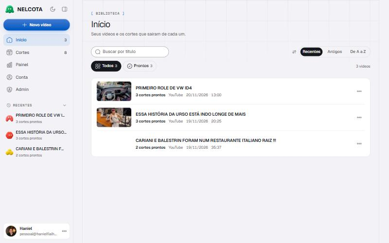
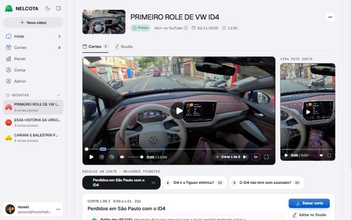
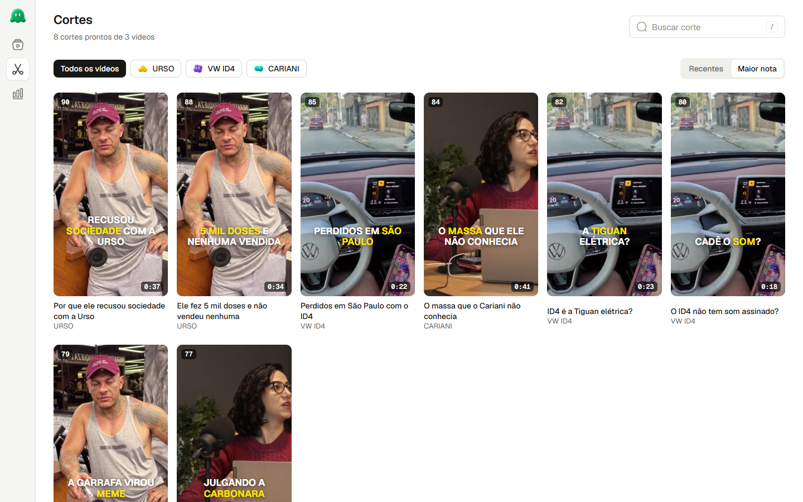
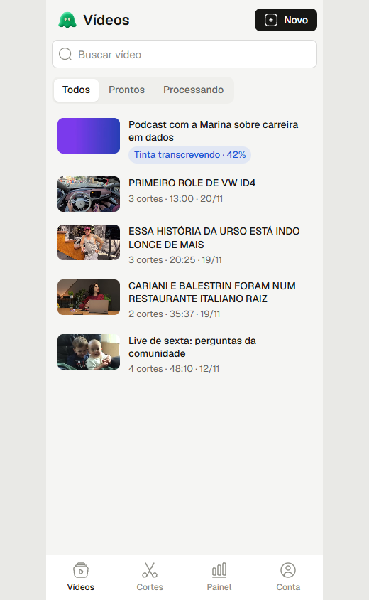
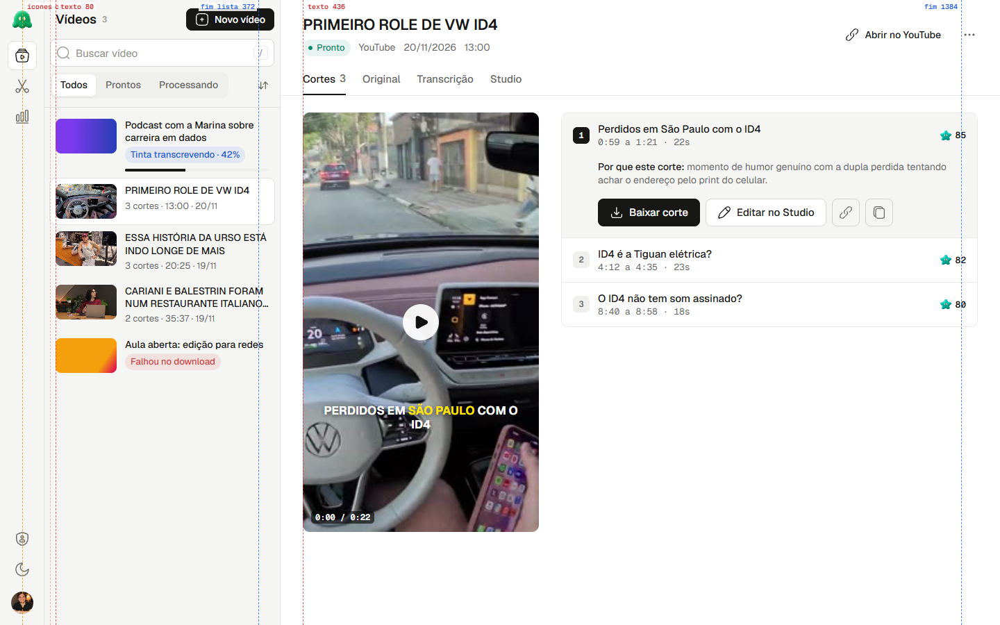
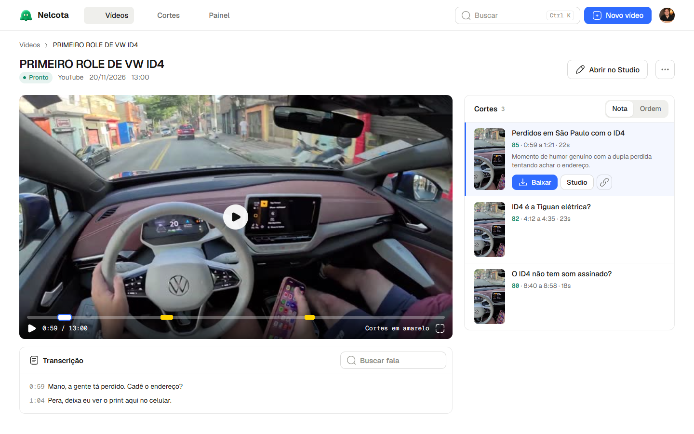
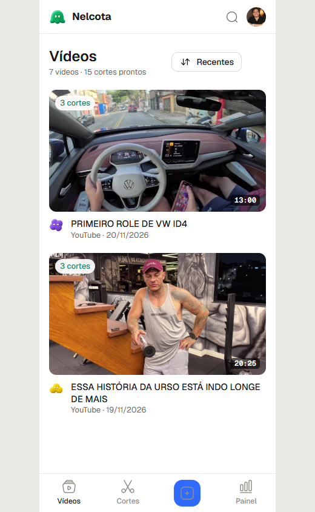
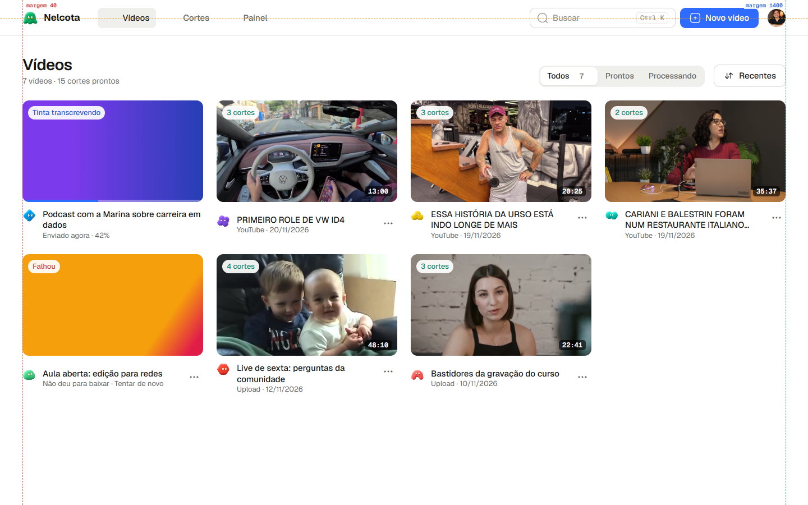
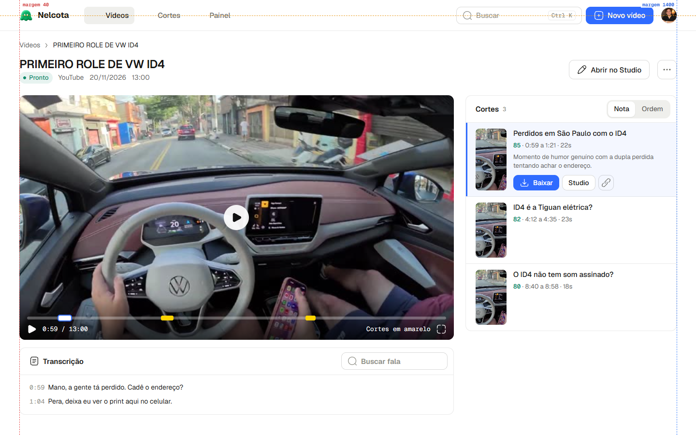
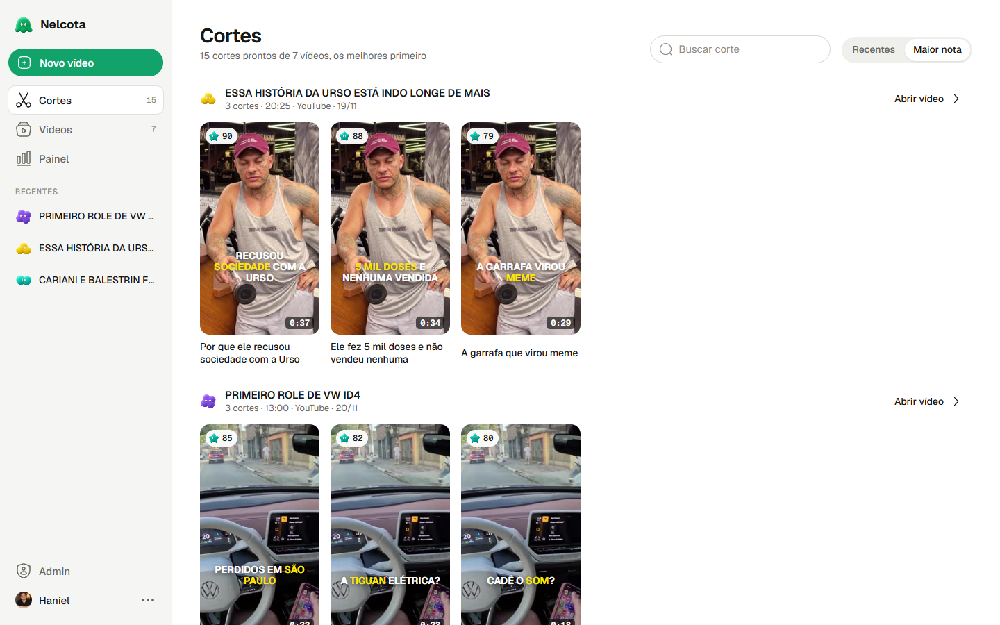
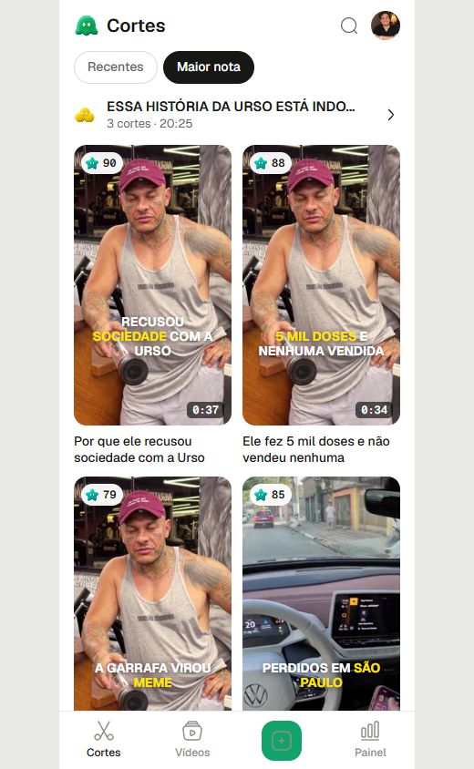
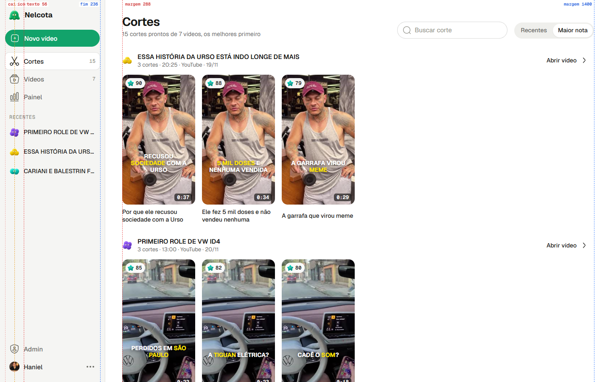
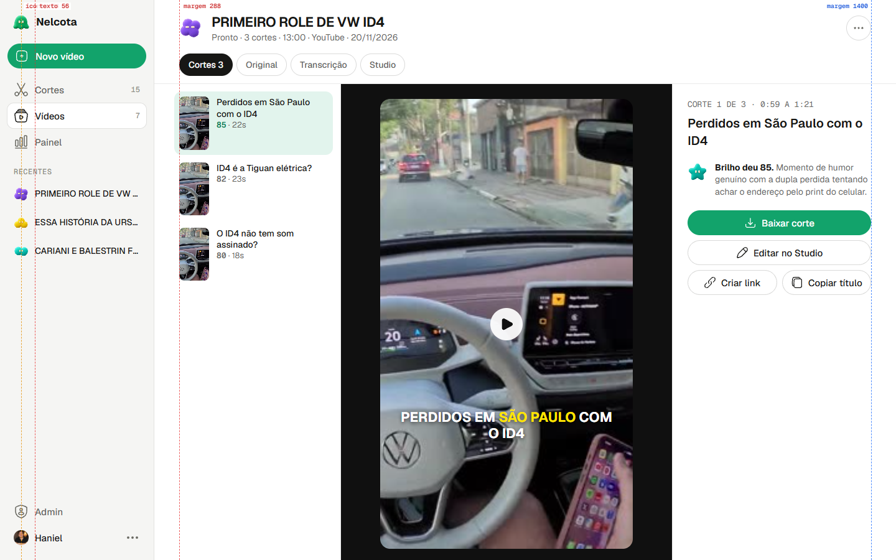